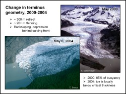
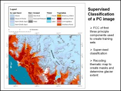
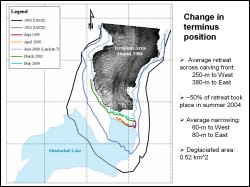

 Mendenhall glacier is a dynamic maritime glacier in southeastern Alaska. During the last century the glacier has undergone substantial thinning and volume loss, and concurrently the ice extent has significantly changed. To monitor the rate of retreat, which may be accelerating, the terminus position and glacier margins were carefully determined in this study, using Landsat ETM imagery and aerial photographs. The study was useful in measuring changes that were greater thand 30 meters spatial extent.
 A principal component analysis on the visisble and infrared bands of the Landsat image was performed. The composite of first three principal component images was used to carry out supervised classification. Fourteen classes were identified as cloud, fjord, lake, four types of snow and ice, three types of rock and urban area, four types of vegetation. The resultant classified image is shown in the figure. Only the four snow and ice classes were used for further processing, as the interest was in monitoring the retreat of the glacier
 A digital comparison of coregistered Landsat image of 2000 and aerial photos of 2004 indicated a loss of 0.52 square kms in terminus area. It also revealed that along the western margin and terrestrial terminus, the glacier receded an average of 60 meters with changes ranging from a local advance of 17 meters to a local retreat of 164 meters. The image derived terminus position was mapped along with terminus position from 1948 and 1982 (from USGS topo maps) and with teminus positions in 1999 and 2002 (from field surveys) to produce this map showing change in the terminus position of Mandenhall glacier between 1948 and 2004.